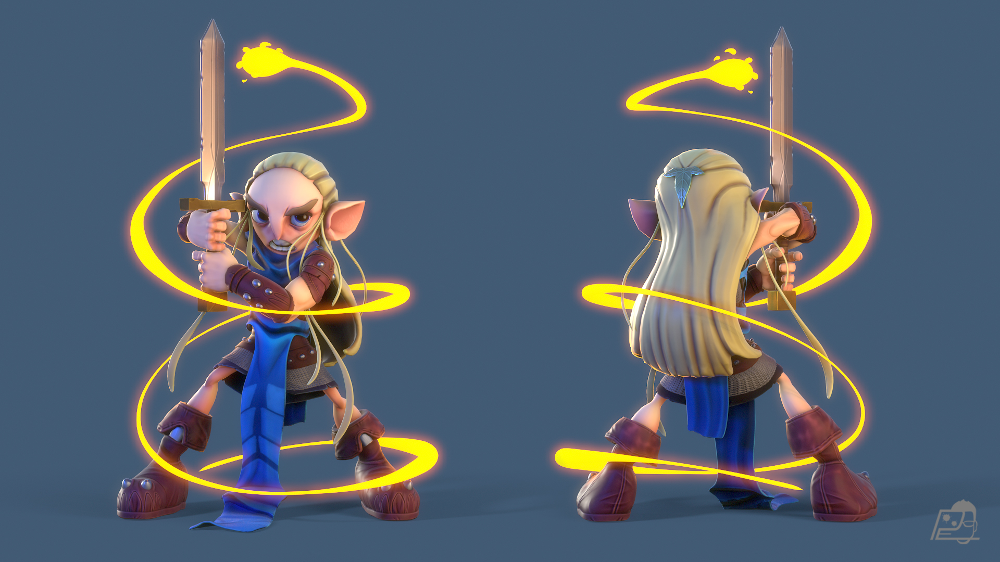
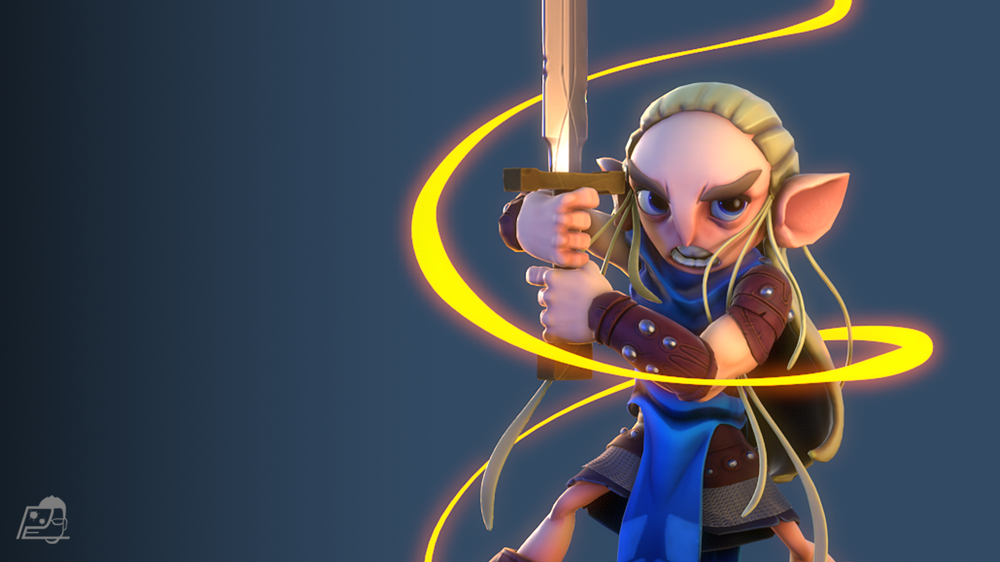
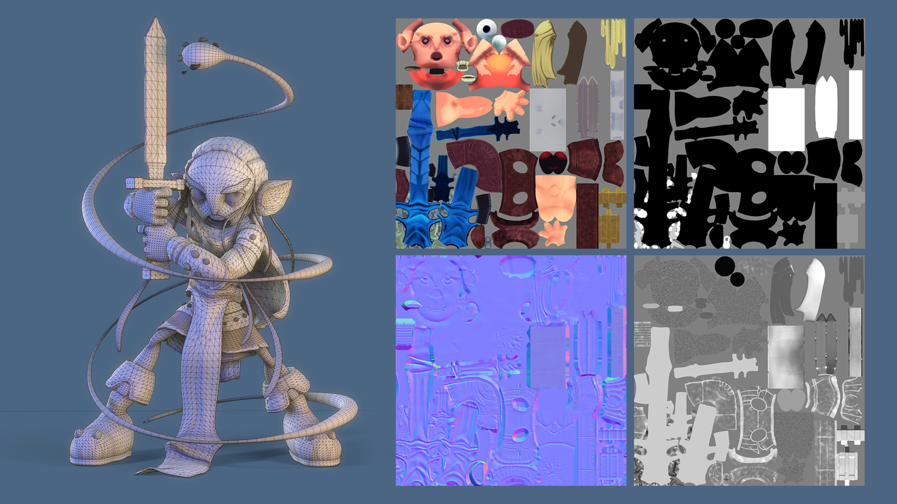

Silhouette
La espada, las orejas, el cabello y las grandes botas construyen una silueta compacta y reconocible.

Explorar proyecto ↓01 / Overview
Un guerrero elfo 3D construido alrededor de una silueta compacta, expresiva y fácil de reconocer.
Las proporciones exageradas, la espada vertical y las líneas mágicas que envuelven al personaje aportan energía a la pose. El contraste entre azules intensos, cuero rojizo y cabello claro ayuda a separar cada capa del diseño.





La espada, las orejas, el cabello y las grandes botas construyen una silueta compacta y reconocible.
Las proporciones caricaturizadas y las formas redondeadas equilibran fuerza, agilidad y personalidad.
La paleta fría del personaje contrasta con el efecto mágico cálido que guía la mirada alrededor de la pose.
La pose de combate y el recorrido del efecto mágico convierten una presentación frontal y posterior en una composición dinámica.
El desglose en clay y wireframe permite observar por separado el volumen, la construcción de la silueta y la topología que sostiene el resultado final.
02 / Fin del proyecto